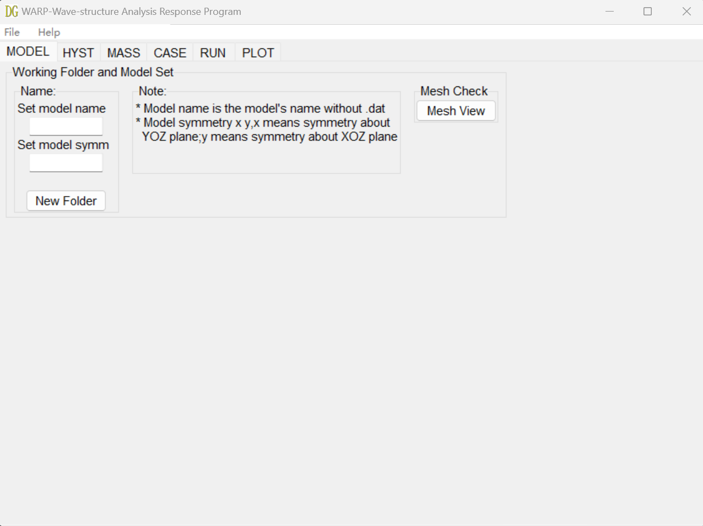

WARP, Wave-structure Analysis Response Program
WARP is a Python-based tool designed for parameter input, execution, and result visualization of the open-source BEM software Nemoh. The software integrates BEM model visualization capabilities based on Meshmagick, enabling the display and inspection of computational models.
In this vision, only one body parameters could be inputed.
WARP currently does not support the modeling of panel models, so users need to create panel models in the Nemoh format using other modeling software.
WARP 